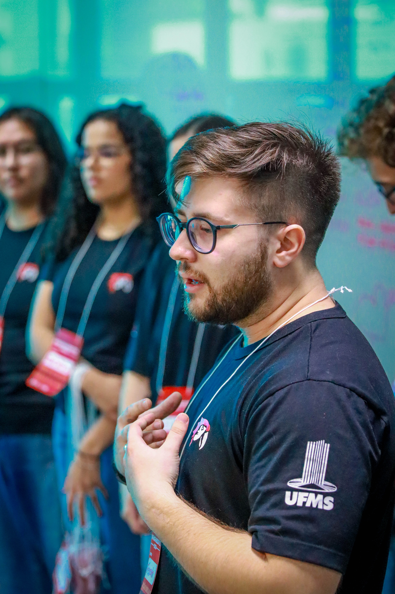

Desenvolvemos sistemas de gestão sob medida para a sua empresa, em todo o Brasil, com a proximidade de um time local. Entregamos o código ao cliente — sem dependência de fornecedor.
A UP Inovação Tecnológica nasceu em Campo Grande com um objetivo direto: levar tecnologia de qualidade para as empresas da região, sem a distância e o custo de fornecedores de fora. Hoje atendemos clientes em todo o Brasil de forma remota, mantendo a proximidade de quem está por perto. Fundada por Fernando Gonçalves, a UP acumula mais de 5 anos de experiência prática em desenvolvimento de sistemas, consultoria de TI e automação de processos. Cada projeto é conduzido com foco no resultado real para o cliente, do diagnóstico à entrega.
Trabalhamos de forma remota com empresas de qualquer região do país. Para quem está no Mato Grosso do Sul, oferecemos também atendimento presencial — reuniões e homologações na sua empresa, quando fizer sentido.
Entendemos o contexto de quem opera no setor — logística, tributação, cadeia de distribuição e os desafios específicos da operação, inclusive a realidade do Centro-Oeste.
Trabalhamos com empresas de diferentes tamanhos. O escopo é definido no diagnóstico para caber no orçamento disponível.
Só desenvolvemos o que resolve um problema real. Não construímos tecnologia pela tecnologia — construímos o que gera retorno verificável.
Tudo documentado antes de começar. Nenhum custo extra sem aprovação prévia. Mudanças de escopo são tratadas abertamente — não aparecem na nota final.
O código é entregue ao cliente ao final do projeto. Sem licença, sem lock-in, sem cláusula que impeça você de levar o projeto para outro fornecedor.
Sprints de duas semanas com demonstrações reais. Você acompanha o progresso — não espera meses para ver o que foi feito com o seu dinheiro.

Fundador & Consultor Técnico
Responsável técnico por todos os projetos da UP, Fernando atua há mais de 5 anos como desenvolvedor e consultor de TI atendendo empresas e organizações em todo o Brasil. A atuação vai do desenvolvimento de sistemas web e automações até manutenção de hardware e infraestrutura — sempre com diagnóstico antes de qualquer solução. Combina formação acadêmica sólida com prática direta em projetos reais, do levantamento de requisitos à entrega final.
Agende uma conversa de 60 minutos. Apresentamos nosso trabalho e ouvimos o seu desafio — sem compromisso.